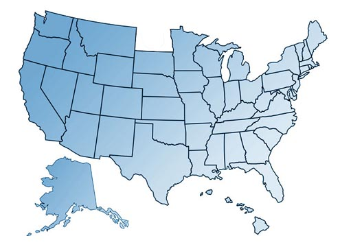

Wyoming and North Dakota are one of the biggest mysteries in the world today. Their existence is almost as mythical as the Bermuda Triangle. On the maps, North Dakota and Wyoming are seen as a flat plain area with no building in sight. Looking at the cities of Wyoming and North Dakota you notice they all have similar features, as though they were designed the same way. The buildings are extremely rectangular with each building being closed packed next to each other. The building has different widths and heights but the heights never reached the height of a three-story building. With so much open land and with such a low population there are many different farms.
Wyoming Economy
Cattle
Hogs
Sheep
Lamp
Chicken Eggs
Hay
Coal
Sugar beats
Barley and sunflower seeds
Wheat
North Dakota Economy
Cattle
Milk
Hogs
Honey
Wheat
Barley and sunflower seeds
Hay
Coal
Who is behind this Conspiracy?
United States Government
Canada
Farmers
Coal Companies

The Population of North Dakota and Wyoming: Both have populations less than a million